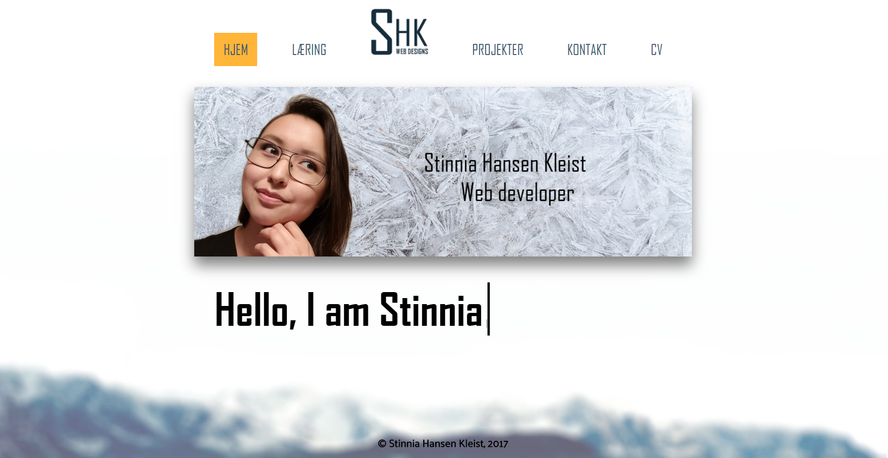

5. Flow - Opdatering af portfolien

Formålet med den sidste projekt var at redesigne alle mine forrige projekter, inklusivt hjemmesiden, du er inde på lige nu.
Igennem hele semesteret har jeg lært meget, og som bevis har jeg designet og kodet det her hjemmeside efter mine nyfundne kompetencer.
Jeg har lært om HTML, CSS, JS, responsive design, jQuery elementer. Jeg har lært at kode primært ved selvarbejde. Jeg har siddet til langt om natten på Google og Youtube, og lært kodning at kende.
Jeg har kæmpet for at få styr på hvad de forskellige elementer betyder, og hvad de gør.
Jeg har stadig meget at lære, og det jeg har lært for nu, kan ses som bevis for min portfolio, som er den her hjemmeside, Stinnia.com.
Læs om forløbet af mit arbejde herunder, og se hvilken udvikling jeg er gået under siden min første dag som Multimediedesigner lærling.
Rapporten findes herunder.
Hvis du vil vide mere om det jeg gør, det jeg kan gøre for dig, så er du velkommen til at kontakte mig, og jeg vil komme tilbage til dig snarest muligt.